Manual
Todas as funções do ImberGym explicadas passo a passo. As funções marcadas com PREMIUM fazem parte do ImberGym Premium; todo o resto é grátis.
01Primeiros passos
Na primeira vez que você abre o ImberGym, algumas perguntas deixam tudo pronto. Dá para mudar tudo depois no perfil.
- Idioma: português, alemão, inglês, espanhol, francês ou italiano (pré-selecionado conforme o celular).
- Unidades: métrico (kg, km) ou imperial (lb, mi). O app sempre salva os valores exatos; a unidade só muda a exibição.
- Sobre você: nome, gênero (incluindo “prefiro não dizer”), idade e, se quiser, peso e altura. Peso e altura servem para exercícios com peso corporal e para sua meta de calorias.
- Objetivo e treino: objetivo (por ex. ganhar massa, perder gordura), nível de atividade, onde você treina (academia, em casa com halteres, sem equipamento) e dias de treino opcionais. Os dias de treino são só um planejamento: nada é marcado como “perdido”.
- Timer de descanso: se uma contagem regressiva começa depois de cada série.
- Contar calorias? Sem nutrição, a aba “Nutrição” some e o ImberGym vira um diário de treino puro.
- Plano inicial e agenda: o app pode criar um plano para iniciantes adequado e salvar os treinos na sua agenda (veja Agenda).
Celular novo? Toque em “Restaurar um backup” na primeira página e escolha o arquivo ZIP do seu backup (veja Backup).
02Como o app é organizado
- Início: seu dia a dia: semana, recomendação, planos, começar um treino.
- Planos: seus planos, os modelos e a biblioteca de exercícios.
- Histórico: estatísticas, todos os treinos e recordes.
- Nutrição: calorias, macros, alimentos e receitas (pode ser desativada).
- Perfil: configurações, medidas corporais, suplementos, academias, backup e mais.
As mensagens na parte de baixo somem depois de alguns segundos ou com um toque, inclusive as que têm “Desfazer”.
03Início
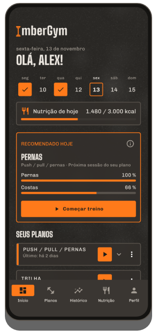
Semana
A barra de segunda a domingo mostra os treinos feitos em laranja com um visto, os próximos dias planejados tracejados e o dia de hoje com uma moldura.
Recomendado hoje
Se o plano usado mais recentemente tem várias sessões, o card sugere a certa, conforme a ordem do plano e a recuperação dos seus músculos (veja Recomendação). “Começar treino” já coloca você em ação.
Seus planos
- Todos os planos aparecem recolhidos, o treinado mais recentemente primeiro. Toque para expandir e ver cada sessão com a última vez (duração, séries, volume ou distância).
- ▶ começa a próxima sessão. Se um plano tem várias, o app pergunta qual: a próxima prevista fica em cima.
- Tocar num card abre o último treino daquela sessão com todas as séries.
- Pelo menu ⋮ você pode “Remover do início” (com desfazer). O plano continua na aba Planos e volta assim que você treinar com ele.
- Treinos livres das últimas quatro semanas também aparecem aqui (com o nome dos exercícios, por ex. “Trilha”) e podem ser repetidos com ▶.
Início rápido
- Outra sessão: começa qualquer sessão de um plano.
- Treino livre: sem plano, adicione exercícios na hora.
- Intervalos: Tabata e mais. PREMIUM
- Desafio: quantas repetições você consegue? A câmera conta.
- Ao ar livre com GPS: grave corridas, pedaladas e trilhas. PREMIUM
Conforme suas configurações, o início mostra também “Nutrição de hoje”, “Suplementos de hoje”, uma gravação GPS aberta (“continuar”) e, no canto superior direito, um ícone para suas carteirinhas.
04Planos e modelos
Modelos
A aba Planos tem planos prontos: iniciante (academia, em casa com e sem halteres), full body A/B, superiores/inferiores, push/pull/pernas, divisões por grupo muscular, abdômen-pernas-glúteos, calistenia, kettlebell, elásticos, yoga e mais. Comece um modelo direto ou copie como plano próprio. Ao copiar, o app pergunta se o timer de descanso deve ser usado.
Criar e editar um plano
- Aba Planos → “Novo plano”, dê um nome.
- Adicione sessões (por ex. Push, Pull, Pernas). As sessões são uma sequência, não dias fixos da semana.
- Adicione exercícios a cada sessão e defina séries, repetições (também uma faixa como 8–12), descanso entre séries e descanso antes do próximo exercício. “Por lado” marca exercícios unilaterais.
- Bi-set: liga dois exercícios seguidos: no treino eles se alternam e o descanso vem depois da rodada.
- Adicione um bloco de intervalos (Tabata etc.) abaixo da lista: veja Treino intervalado.
Cada alteração é salva na hora. Uma estimativa de duração no topo mostra quanto tempo a sessão leva mais ou menos. No editor você também ativa o timer de descanso do plano e escolhe se ele aparece no início.
Compartilhar um plano por QR code
No editor do plano, toque no ícone de QR: o plano inteiro vai no código, sem servidor. “Compartilhar como imagem” envia por mensagem, por exemplo. Compartilhar é grátis.
Escanear plano PREMIUM: aba Planos → “Escanear plano”, capture o código com a câmera ou carregue de uma imagem, confira a prévia e importe.
Grátis: até 5 planos próprios (modelos copiados contam); ilimitados com o Premium.
05Exercícios
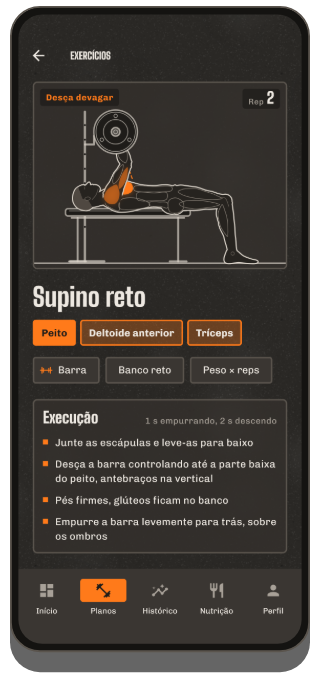
Biblioteca de exercícios
Mais de 250 exercícios, das máquinas ao yoga. Busque por nome ou músculo e filtre por músculo e equipamento.
Detalhe do exercício
- Animação do movimento com os músculos trabalhados em laranja (principais forte, secundários mais claros), a fase (“Empurre”, “Desça devagar”) e um contador de repetições.
- Músculos e equipamento, “Execução” com ritmo e dicas de técnica.
- Sua evolução: um gráfico dos seus valores ao longo dos treinos.
- Na calistenia, os níveis de progressão (mais fácil/mais difícil).
A figura existe em versão masculina e feminina: escolha no perfil, em “Figura”.
Criar um exercício próprio
- Biblioteca → crie seu exercício.
- Escolha nome, equipamento e tipo de registro: peso × reps, peso corporal × reps, reps com resistência do elástico, tempo, cardio ou gravação GPS (para seus esportes ao ar livre; com “Mostrar ritmo” e “Pausa automática”).
- Toque nos músculos no mapa corporal: 1× = principal, 2× = secundário, 3× = remover.
Exercícios próprios com histórico são arquivados ao apagar: seu histórico continua. Grátis até 5 exercícios próprios, ilimitados com o Premium.
06Treino
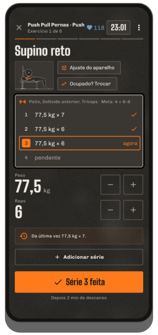
Começar
Pelo início (▶, “Recomendado hoje”, “Outra sessão”, “Treino livre”) ou pela aba Planos. Um treino em andamento sobrevive até a um reinício do celular: ao abrir o app você volta direto para ele.
A tela de treino
- Um exercício por página: deslize para trocar de exercício; a última página é o resumo. No topo: exercício x de y, duração do treino e (com cinta peitoral) sua frequência cardíaca.
- Lista de séries: feitas, “agora” (laranja) e pendentes. Toque numa série para selecioná-la.
- Valores: mude peso e repetições com −/+ ou toque no número grande para digitar (vírgula e ponto valem). Os valores da última vez já vêm preenchidos.
- “Série n feita” marca a série, inicia o descanso e passa sozinho para o próximo exercício (no bi-set, para o exercício parceiro).
- Adicionar série para uma série extra. Séries não feitas ficam vazias e são descartadas no final.
Ajudas no card da série
- Toque na miniatura do exercício: animação e execução sem sair do treino.
- Ajuste do aparelho (máquinas, polias, barra): salve, por ex., o número do aparelho na sua academia e a altura do banco (“D7 · banco 4”); na próxima vez ela está lá e aparece como etiqueta laranja ao lado do nome do exercício (treino, plano, lista de exercícios).
- Incremento de peso (por ex. halteres): o salto de −/+ por equipamento (padrão 2,5 kg / 5 lb).
- Ocupado? Trocar ou Trocar exercício: escolha uma alternativa adequada (só antes de fazer uma série do exercício).
- Sugestão de progressão: se você fizer todas as repetições, o app sugere mais peso (ou menos assistência, um elástico mais forte, o próximo nível). Só vale com “Aplicar”.
- Novo recorde! aparece logo depois de marcar uma série quando você supera uma marca anterior.
Menu ⋮
Adicionar exercício, escolher local PREMIUM, mostrar carteirinha PREMIUM, timer de descanso sim/não, remover exercício, descartar treino.
Cardio e exercícios de sustentação
Exercícios de cardio não têm séries: tempo e distância (andares no stepper), nível nas máquinas e depois “Feito”. Exercícios de sustentação (por ex. prancha) registram segundos.
Peso corporal e assistência
Em exercícios com peso corporal você informa a carga extra; nos assistidos (por ex. barra fixa assistida), a assistência: o app calcula com seu peso corporal do perfil. Se faltar, ele pergunta uma vez na primeira série.
Finalizar
“Concluir” na página de resumo, ou ✕ / o botão voltar: o app pergunta “Finalizar / Descartar / Continuar”. Sem nenhuma série feita, nada é salvo.
07Descanso e tela de bloqueio
- Depois de cada série, a contagem regressiva do descanso corre embaixo com “A seguir”, −15 s, +15 s e “Pular”. A duração vem do plano (descanso entre séries ou antes do próximo exercício).
- O timer continua se você bloquear o celular ou trocar de app; uma notificação mostra a contagem e no final toca o sinal de descanso.
- Escolha o sinal de descanso no perfil: bipes, gongo, sino, apito, sino de boxe, suave, som do sistema ou nenhum, com prévia. A vibração tem um botão próprio.
- Desativar o timer: por plano no editor, para treinos livres no perfil e durante um treino pelo ⋮.
- Descanso pela FC: com cinta peitoral, o descanso termina assim que sua frequência cardíaca cai ao seu limite (no mínimo após 30 s, no máximo com o timer).
Tela de bloqueio
Durante um treino o ImberGym aparece sobre a tela de bloqueio: logo e um relógio grande (descanso ou tempo de treino). Depois de 2 minutos escurece, um toque acende; “Toque para desbloquear” leva você de volta ao treino. A tela fica ligada durante o treino.
08Treino intervalado PREMIUM
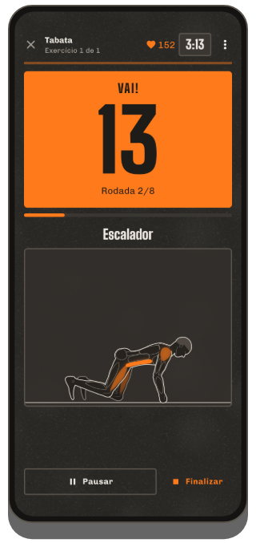
Início rápido
- Início → bloco “Intervalos”.
- Escolha um modelo: Tabata 20/10 × 8, HIIT 40/20 × 8, 30/30 × 10 ou EMOM 60 s × 10; tudo é ajustável: esforço, descanso, rodadas, blocos e descanso entre blocos.
- Adicione exercícios: eles se alternam a cada rodada.
- “Começar intervalos”.
Como funciona
Depois de 10 s de preparação, uma contagem regressiva grande mostra o esforço (laranja) e o descanso (cinza, com “A seguir” e a figura). Antes do esforço uma voz conta em inglês “One, two, three – go!” e antes do fim “Three, two, one – stop!” (pode ser desativado no sinal de descanso do perfil; aí tocam bipes). Funciona também com o celular bloqueado. Pause e finalize quando quiser; os intervalos feitos ficam salvos. No final você pode registrar suas repetições por rodada.
Num plano
Adicione um “Bloco de intervalos (Tabata e mais)” no editor do plano: o bloco vira uma página própria do treino.
Contar com a câmera EXPERIMENTAL
Nos exercícios sem equipamento (agachamento, agachamento com salto, agachamento afundo, afundo para trás, burpee, variações de flexão) e no abdominal supra, abdominal completo, abdominal infra, abdominal canivete, elevação de pernas deitado e elevação de joelhos deitado, a câmera pode contar suas repetições. Na prancha alta, prancha e prancha lateral ela mede quanto tempo você mantém a posição correta: o tempo do intervalo continua, o tempo sustentado só enquanto ombros, quadril e tornozelos estiverem alinhados; senão aparece “Quadril para cima!” ou “Quadril para baixo!”.
- Na página do bloco, toque em “Contar com a câmera (experimental)” e permita a câmera.
- Coloque o celular de lado a 2–3 m, por ex. apoiado na parede ou numa garrafa. Flexões, abdominais ou exercícios em pé e no chão misturados: coloque o celular no chão, em pé ou deitado, o app se adapta. Com o celular deitado, a preparação, o contador e o resumo também giram: segundos e repetições grandes à esquerda, a animação à direita.
- “Começar quando eu estiver pronto” e fique em posição. Assim que você ficar parado na imagem por 2 segundos, o bloco começa sozinho (no máximo após 20 segundos).
Durante o esforço, segundos e repetições aparecem lado a lado e embaixo “perfeitas” (amplitude completa) e “feitas” (não totalmente completas). Repetições curtas demais não contam. No final, o resumo mostra as repetições por exercício e rodada, sua porcentagem de técnica e uma dica; os números já vêm preenchidos e podem ser alterados.
A imagem da câmera é analisada só no seu celular e nunca é salva. A detecção fica em você, mesmo que alguém treine atrás de você na academia. A função ainda está em teste: confira os números no final.
Desafio
Início → bloco “Desafio” (grátis): “Quantas flexões eu consigo?” – a câmera conta. Três tipos: Máx. de reps (termina sozinho depois de 6 segundos sem repetição), Contra o relógio (o máximo possível no tempo escolhido em minutos, por ex. 0,5, 1 ou 30) e Sustentação (prancha etc.; termina quando você perde a posição por 2 segundos). Escolha um exercício, posicione-se como acima e depois de “3 – 2 – 1 – Vai!” é com você. No final aparece o resultado com as “perfeitas”, seu recorde anterior e, se for o caso, “Novo recorde!”. O desafio é salvo automaticamente (aparece no histórico e conta para os recordes; apague lá se quiser). Compartilhar envia o resultado como card com exercício, marca e, se você conseguiu, “Novo recorde!”.
09Recomendação e coach de platô
Recomendado hoje
Em planos com várias sessões: se a próxima sessão do plano estiver bem recuperada (pelo menos 85 %), ela é recomendada; senão, a mais recuperada. O card mostra a recuperação dos principais grupos musculares e um aviso como “Pernas só 27 % recuperado”. ⓘ explica a regra. Pode ser desativado no perfil.
Coach de platô PREMIUM
Se um exercício não melhorou em 4 treinos (ou 3 treinos em 3 semanas), aparece antes da primeira série um aviso amarelo com uma sugestão, por ex. “hoje mais leve (70 kg × 8), depois volte a forçar”.
- Aplicar coloca o peso mais leve (−10 %) nas séries pendentes.
- Mais mostra a evolução e opções: deload, outra faixa de repetições, uma variação, mais descanso.
- Ocultar por 2 semanas se você quiser continuar assim de propósito.
Cardio e exercícios de sustentação nunca recebem aviso de platô. Pode ser desativado no perfil.
10Relógio (Wear OS) PREMIUM
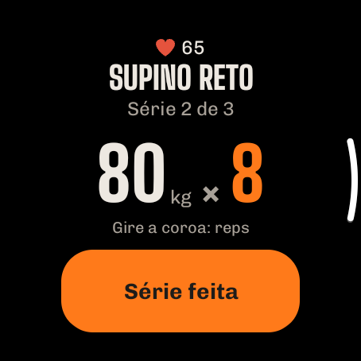
Com um relógio Wear OS (por ex. Samsung Galaxy Watch 4 ou superior, Google Pixel Watch, OnePlus Watch, TicWatch) você controla o treino pelo pulso: o celular pode ficar no bolso. Todos os dados ficam no celular; o relógio só mostra e envia o que você informa.
Instalar
- O ImberGym precisa estar instalado no seu celular.
- O mais fácil: Perfil → “Conectar relógio” → “Instalar no relógio”: a Play Store abre direto no relógio. A página também mostra se o ImberGym já está instalado lá. Você também pode buscar o ImberGym na Play Store do relógio.
- Na primeira vez que abrir no relógio, permita notificações e frequência cardíaca.
Começar um treino
O relógio mostra todos os planos com suas sessões, a próxima em laranja. Toque para começar o treino no celular e no relógio. Se já houver um treino em andamento, o relógio mostra na hora a série atual.
Série
- Exercício, “Série 2 de 3” e seus valores da última vez.
- Toque num valor → altere com −/+ (o peso com seu incremento). Toque no número → digite qualquer valor, por ex. 82,5.
- Com coroa ou bisel giratório, girar muda as repetições direto.
- “Série feita” marca a série, também no celular.
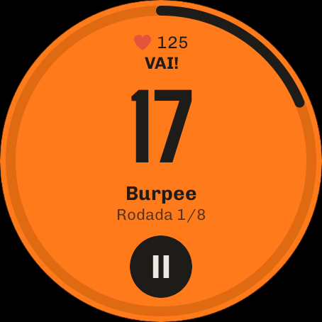
Descanso
Contagem regressiva com um anel; +15 adiciona tempo, ▶ pula. O relógio conta sozinho e vibra no fim do descanso, mesmo com o app fechado ou a tela desligada. Enquanto isso aparece no mostrador um ícone do ImberGym com o tempo restante.
Treino intervalado
Na página de um bloco de intervalos o relógio mostra o tipo, os tempos e os exercícios com “Começar intervalos”. Depois: esforço em laranja, descanso escuro com “A seguir”; vibração a cada troca. ⏸ pausa; depois ▶ retoma ou ✕ finaliza. As repetições por rodada você registra depois no celular.
Frequência cardíaca
Durante o treino o relógio mede sua frequência cardíaca e envia ao celular, como uma cinta peitoral (indicador ❤, zonas cardíacas, detalhes do treino). Se houver uma cinta peitoral conectada, ela tem prioridade.
Bloco
Adicione o bloco “ImberGym” aos blocos do relógio: ele mostra a próxima sessão com “Começar” ou, durante um treino, o exercício atual.
Relógios mais antigos: relógios Tizen (por ex. Gear S3) não são compatíveis. Garmin, Amazfit e outros muitas vezes podem transmitir a frequência cardíaca como uma cinta peitoral (veja Frequência cardíaca).
11Ao ar livre e Trackshow PREMIUM
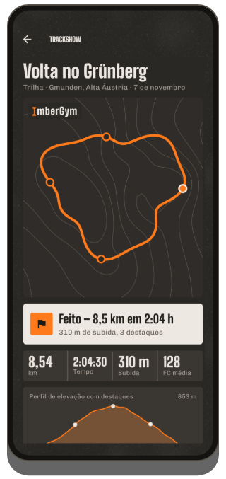
Gravar
- Início → “Ao ar livre com GPS” → escolha a atividade (corrida, bike, trilha…).
- Permita a localização “durante o uso do app”. Comece a gravar: a tela pode ficar desligada; uma notificação mostra “ImberGym está gravando”.
- Pause e retome quando quiser. Na corrida e na bike o app pausa sozinho após 10 s parado e continua no primeiro passo (não na trilha: a parada faz parte do percurso). Depois de uma pausa manual ele também retoma sozinho assim que você seguir.
- “Finalizar” salva o percurso como treino com distância, tempo, velocidade ou ritmo e elevação (pelo barômetro).
Trackshow
No final, a Trackshow reproduz seu percurso sobre curvas de nível, com voo de câmera e destaques (trecho mais íngreme, ponto mais alto, quilômetro mais rápido, recorde), card de resultado e perfil de elevação. “Ver de novo” repete; toque no nome do local para alterá-lo.
Compartilhar como imagem de stories (9:16) ou como vídeo com voo de câmera. Nos detalhes do treino também há a exportação GPX para outros apps.
12Histórico e estatísticas
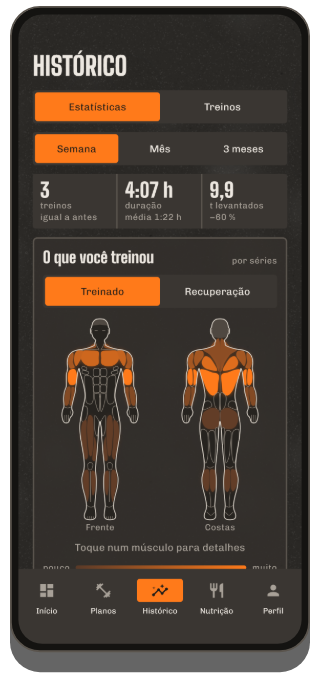
Estatísticas
- Período semana / mês / 3 meses (até hoje) comparado ao período anterior: treinos, duração, volume.
- O que você treinou PREMIUM: mapa corporal de frente e de costas; quanto mais séries, mais forte a cor; toque para ver o número. Troque para Recuperação: o quanto cada músculo está recuperado (estimativa).
- Distribuição por grupo muscular em anel.
- Recordes: os mais recentes; “Ver todos” abre a lista. Toque num recorde para ver a evolução do exercício.
- Mostrar peso e gordura corporal e o resumo semanal e anual como card para compartilhar.
Treinos
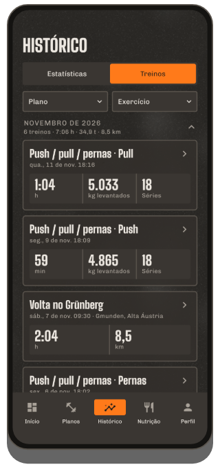
Todos os treinos por ano e mês com totais. Filtre por plano (incluindo “Treinos livres”) e por exercício, combináveis.
Detalhes do treino
- Todos os exercícios e séries, troféus por recordes, academia ou local.
- Editar: toque numa série para alterar, adicione ou apague séries, ajuste data, hora de início e duração, apague o treino.
- Frequência cardíaca (média, máxima, curva): da cinta peitoral ou com “Carregar FC do relógio”.
- Compartilhar treino como card com músculos, exercícios e novos recordes; em percursos GPS, a Trackshow e o GPX.
Recordes
Por exercício: peso máximo, 1RM estimado, volume, mais repetições, sustentação mais longa; no cardio, maior distância, ritmo ou velocidade mais rápidos, maior duração. Um recorde só conta se superar uma marca anterior.
13Nutrição
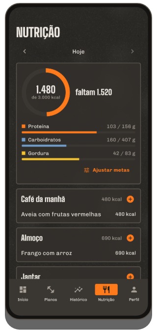
O dia
Com ‹ › você troca de dia. O anel mostra o que você comeu em relação à meta e quanto “falta”; embaixo, proteína, carboidratos e gordura. Quatro refeições: café da manhã, almoço, jantar e lanches.
Registrar alimentos
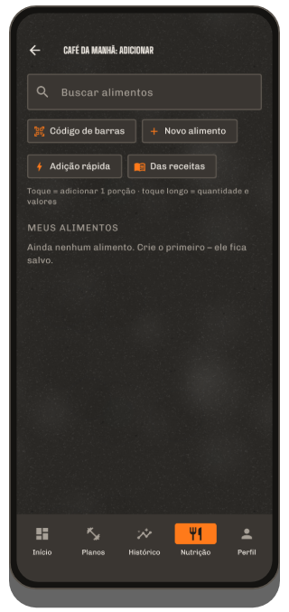
- + numa refeição abre os blocos: primeiro o que você come com frequência nessa refeição, senão sugestões típicas.
- Tocar registra uma porção na hora (a quantidade aparece sob o nome), com “Desfazer”. O pequeno − no bloco tira uma porção.
- Toque longo abre a quantidade em gramas, mililitros ou porções (também ½) com a tabela nutricional.
- Buscar: mais de 1.200 alimentos e pratos do dia a dia, offline.
- Código de barras: escaneie um produto: primeiro ele é buscado no celular, senão no Open Food Facts. Confira os valores e salve: na próxima vez ele aparece na hora.
- Crie um alimento próprio (valores por 100 g ou 100 ml, botão “Líquido”) ou use a adição rápida (só calorias).
- Das receitas: uma receita direto nesta refeição.
- Toque num registro para mudar a quantidade ou removê-lo.
Metas
“Ajustar metas” (ou toque no anel): escolha seu objetivo, uma meta de calorias automática (por altura, peso, idade e atividade) ou própria, macros individuais e uma meta para dias de descanso. Meta dinâmica PREMIUM: soma uma parte da sua atividade medida pelo Health Connect (controle de 0–100 %).
Calorias não interessam? Perfil → desative a nutrição; a aba some.
14Receitas
Nutrição → “Descobrir receitas” ou a biblioteca: 40 receitas próprias com filtros (refeição, rica em proteína, vegetariana). Uma receita mostra calorias e macros por porção, ingredientes com cálculo de porções (−/+, ½, ¼, ¾), modo de preparo e uma dica. “Adicionar 1 porção ao diário” registra. 6 receitas básicas são grátis; todas as outras e suas próprias receitas (ingredientes da busca de alimentos, foto própria) são Premium PREMIUM.
15Peso, gordura corporal e fotos de progresso
Peso e gordura corporal
- Perfil → “Peso e gordura corporal” → adicione um registro. Gordura corporal como valor ou estimada pelas medidas (pescoço, cintura e, se precisar, quadril; precisa da altura no perfil).
- O card “Atual” mostra a média de 7 dias e a variação. Gráficos PREMIUM de 1 mês, 3 meses, 1 ano ou tudo.
- Os registros são agrupados por mês; toque para editar ou apagar.
- Importar do Health Connect (por ex. uma balança Withings): ative o botão e dê permissão; novas medições chegam sozinhas; puxe para baixo para atualizar na hora.
- O peso do perfil sempre segue o registro mais recente.
Fotos de progresso PREMIUM
Perfil → “Fotos de progresso”: escolha a vista (frente, lado, costas); “Câmera” mostra sua última foto semitransparente como sobreposição (mesma pose e distância), com temporizador. Compare antes/depois com controle deslizante ou transição. As fotos ficam no app, nem na galeria nem no backup do Android; “Compartilhar / salvar”, “Exportar todas as fotos” e “Compartilhar comparação” só as tiram de lá quando você quiser.
16Frequência cardíaca e Health Connect
Frequência cardíaca do seu relógio
Se o seu relógio grava no Health Connect (por ex. Samsung, Google, Garmin via Health Connect): nos detalhes do treino toque em “Carregar FC do relógio”; dê permissão uma vez e depois o ImberGym busca sozinho a frequência cardíaca dos treinos recentes. Dica: inicie também um treino no relógio; senão ele só mede a cada poucos minutos.
Relógios Huawei: o Huawei Health não grava no Health Connect. O app “Health Sync” transfere a frequência cardíaca; depois funciona como acima.
Cinta cardíaca e zonas
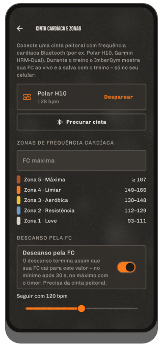
- Perfil → “Cinta cardíaca e zonas” → coloque a cinta, “Procurar cinta”, pareie (permita “Dispositivos próximos”).
- Durante um treino ela se conecta sozinha; sua frequência cardíaca aparece em cima na cor da zona.
- Defina sua FC máxima (senão 220 − idade); daí saem cinco zonas.
- Se quiser, descanso pela FC com seu próprio limite (veja Descanso).
Muitos relógios podem transmitir a frequência cardíaca como uma cinta (por ex. Garmin “Transmitir frequência cardíaca”, relógios Huawei recentes “Compartilhar frequência cardíaca”, Polar, Coros, Suunto): pareie como uma cinta.
17Suplementos
Perfil → “Suplementos”: adicione seus próprios produtos (nome, forma, unidade como mg, UI, un., gotas…, quantidade habitual e, se quiser, princípio ativo por unidade). Toque em “Tomado” todo dia (toque longo = outra quantidade, ↶ = desfazer, também para dias passados). Os lembretes têm horário e dias da semana (todo dia, seg–sex ou como quiser). O calendário mensal mostra os dias em que você tomou tudo. O ImberGym propositalmente não sugere produtos nem dosagens.
18Academias e carteirinhas PREMIUM
Minhas academias
Perfil → “Minhas academias”: crie uma academia com um nome e “Usar localização atual”. Quando você começa um treino lá, o app reconhece a academia (“Local reconhecido”); senão escolha durante o treino pelo ⋮ → “Escolher local”. O local aparece no histórico, nos detalhes e no evento da agenda.
Carteirinhas
Perfil → “Carteirinhas”: escaneie o código de barras ou QR da carteirinha com a câmera ou digite número e formato, escolha nome e cor e associe uma academia. Toque para mostrar em tela cheia com brilho máximo, para o leitor da catraca. Acesso rápido pelo ícone de carteirinha no início e durante o treino pelo ⋮ → “Mostrar carteirinha”. As carteirinhas ficam só no seu celular (nunca num backup). Infelizmente um celular não consegue imitar chaveiros com transponder (RFID/NFC).
19Agenda
Perfil → “Salvar treinos concluídos na agenda”: dê permissão e escolha uma agenda; treinos anteriores também podem ser adicionados. Cada treino concluído vira um evento (título “ImberGym: nome do plano”, início e fim, exercícios e séries na descrição, academia como local), atualizado quando você edita e removido quando você apaga. Ao desativar, o app pergunta se deve apagar os eventos existentes. Nenhum evento é criado com antecedência.
20Perfil e configurações
- Dados pessoais: nome, gênero, idade, altura, peso, objetivo, atividade.
- Idioma e unidades: as mudanças valem na hora.
- Figura: figura masculina ou feminina nas animações e no mapa corporal.
- Sinal de descanso: som com prévia, vibração, “Avisos de voz nos intervalos”.
- Timer de descanso padrão para treinos livres e novos planos.
- Recomendação diária e coach de platô sim/não.
- Nutrição sim/não.
- Peso e gordura corporal, fotos de progresso, suplementos, cinta cardíaca e zonas, minhas academias, carteirinhas, agenda, dados e backup.
- ImberGym Premium, Avaliar o ImberGym e Sobre o ImberGym (versão, privacidade, contato, fontes, licenças).
21Backup, importação e exportação
Backup
Perfil → “Dados e backup” → criar backup: um arquivo ZIP com todos os dados (fotos de progresso só se você incluir); salve pelo menu de compartilhamento, por ex. no Google Drive ou em Arquivos. Guarde num lugar seguro; o ImberGym não tem nuvem.
Restaurar
“Escolher arquivo de backup” → confira a data e o número de treinos → “Substituir”. O app reinicia com os dados do backup. Também dá para fazer na primeira página depois de instalar.
Importar de outros apps
“Escolher arquivo CSV”: as exportações do Strong e do Hevy são reconhecidas (no Strong, escolha a unidade de peso). A prévia mostra treinos, séries e novos exercícios próprios; treinos duplicados são ignorados.
Exportar
“Exportar treinos (CSV)”: uma linha por série; abre, por ex., no Excel.
23Ajuda
- O sinal de descanso não toca? Permita as notificações do ImberGym e confira o modo “Não perturbe”.
- Falta frequência cardíaca em treinos curtos? Sem um treino iniciado no relógio, ele só mede a cada poucos minutos: treine também no relógio ou use uma cinta peitoral.
- A academia não é reconhecida? Permita a localização e salve uma vez a localização da academia estando lá.
Dúvidas, sugestões, erros: chr.mathai@gmail.com